NumPy and Matplotlib#
Climate data is, underneath it all, numbers in arrays — a grid of model temperatures, a satellite swath, a stack of float profiles. NumPy is the library that lets Python store and compute on those arrays efficiently, and Matplotlib is how we turn them into figures. Almost everything later in this course (pandas, xarray) is built on top of these two, so this is the bedrock of the scientific Python stack.
In this notebook we’ll create and index arrays, do math across whole arrays at once (vectorization and broadcasting), reduce them to summary statistics, and make our first plots.
NumPy — the fundamental package for scientific computing with Python (numpy.org)
Matplotlib — a comprehensive library for static, animated, and interactive visualizations (matplotlib.org)
Working through this notebook
This page is a Jupyter notebook. Download it using the ⬇ button in the top-right of the page (or copy-paste the cells into a fresh notebook), open it in your environment (JupyterLab on LEAP or Colab), and step through the cells. When you reach a Try it admonition, experiment in your own cells before moving on.
In-class assignment — 10 points
The “Try it” exercises in this notebook are part of your in-class assignment for this section. Complete them in your own copy of the notebook, push it to your week folder, and post the notebook link on the matching Courseworks assignment. (One 10-point assignment covers all the lecture notebooks in this section.)
Importing and Examining a New Package#
This will be our first experience with importing a package that is not part of the Python standard library.
import numpy as np
What did we just do? We imported a package. This makes new variables (mostly functions) available to use in our notebook — we can access them with the np. prefix, like this:
We can use dir() to see the variables we currently have access to — np should now be one of them.
dir()
['In',
'Out',
'_',
'__',
'___',
'__builtin__',
'__builtins__',
'__doc__',
'__loader__',
'__name__',
'__package__',
'__spec__',
'_dh',
'_i',
'_i1',
'_i2',
'_ih',
'_ii',
'_iii',
'_oh',
'exit',
'get_ipython',
'np',
'open',
'quit']
NumPy has hundreds of functions and types — dir(np) lists them all (too many to print here). A common pattern is to filter that list for names containing a keyword you care about:
[name for name in dir(np) if 'lin' in name]
['linalg', 'linspace']
You can check the version of any package via its __version__ attribute — useful when reproducing results or filing bug reports:
np.__version__
'2.4.6'
There is no way we could explicitly teach each of these functions. The numpy documentation is crucial!
https://numpy.org/doc/stable/reference/
Try it
Import the math module (import math). Use dir(math) to peek at what’s inside. Pick a function that looks interesting (e.g., log, factorial, sqrt) and call help() on it to read its signature and docstring.
NDArrays#
The core class is the numpy ndarray (n-dimensional array).
Compared to a regular Python list, numpy arrays have a few key differences:
NumPy arrays can have N dimensions (lists, tuples, etc. are 1D).
NumPy arrays hold values of a single datatype (e.g.
int,float);lists can hold anything.NumPy optimizes numerical operations on arrays — NumPy is fast!
Let’s create a 1D array from a Python list, then inspect its properties.
a = np.array([9, 0, 2, 1, 0])
a
array([9, 0, 2, 1, 0])
a.dtype
dtype('int64')
a.shape
(5,)
The shape is returned as a tuple, which means we can index it like any other tuple — useful when we want to grab a specific dimension’s length.
type(a.shape)
tuple
Arrays can also be multi-dimensional and have an explicit dtype.
b = np.array([[5, 3, 1, 9], [9, 2, 3, 0]], dtype=np.float64)
b.dtype, b.shape
(dtype('float64'), (2, 4))
Note
The fastest-varying dimension is the last dimension; the outer level of the hierarchy is the first dimension. (This is called “C-style” indexing.)
Try it
Create three arrays:
A 1D array from
[1, 2, 3, 4, 5].A 2D array from
[[1, 2], [3, 4]].A 3D array of your choice (a list of lists of lists).
Print the shape and dtype of each. Then create a 1D array that includes a decimal value (e.g. [1, 2, 3.5]) and confirm the dtype is now float64.
Array Creation#
There are several ways to build arrays in numpy beyond passing a list to np.array. The functions below come up constantly:
np.zeros/np.ones/np.full— blank arrays of a given shape.np.arange/np.linspace/np.logspace— evenly-spaced values along a range.np.meshgrid— combine 1D arrays into 2D coordinate grids.
c = np.zeros((9, 9))
d = np.ones((3, 6, 3), dtype=np.complex128)
e = np.full((3, 3), np.pi)
e = np.ones_like(c)
f = np.zeros_like(d)
arange works very similar to range, but it populates the array “eagerly” (i.e. immediately), rather than generating the values upon iteration.
np.arange(10)
array([0, 1, 2, 3, 4, 5, 6, 7, 8, 9])
arange is left inclusive, right exclusive, just like range, but also works with floating-point numbers.
np.arange(2,4,0.25)
array([2. , 2.25, 2.5 , 2.75, 3. , 3.25, 3.5 , 3.75])
A frequent need is to generate an array of N numbers, evenly spaced between two values. That is what linspace is for.
np.linspace(2,4,20)
array([2. , 2.10526316, 2.21052632, 2.31578947, 2.42105263,
2.52631579, 2.63157895, 2.73684211, 2.84210526, 2.94736842,
3.05263158, 3.15789474, 3.26315789, 3.36842105, 3.47368421,
3.57894737, 3.68421053, 3.78947368, 3.89473684, 4. ])
Log-spaced values are useful when working with quantities spanning multiple orders of magnitude (e.g., frequencies, energy scales).
np.logspace(1, 2, 10)
array([ 10. , 12.91549665, 16.68100537, 21.5443469 ,
27.82559402, 35.93813664, 46.41588834, 59.94842503,
77.42636827, 100. ])
NumPy also has some utilities for helping us generate multi-dimensional arrays.
meshgrid creates 2D arrays out of a combination of 1D arrays. Meshgrid essentially tiles 1D arrays to a shape that is combined shape of the input arrays.
x = np.linspace(-2*np.pi, 2*np.pi, 100)
y = np.linspace(-np.pi, np.pi, 50)
xx, yy = np.meshgrid(x, y)
print(x.shape, y.shape)
print(xx.shape, yy.shape)
(100,) (50,)
(50, 100) (50, 100)
Try it
Use np.linspace to create an array of 100 evenly-spaced values between 0 and 1, and np.arange to create the integers from 0 to 10. Print the dtype and shape of each. Then use np.meshgrid to build a 2D grid from these two arrays and print its shape.
Indexing#
Basic indexing in numpy is similar to lists — single brackets, zero-based, and negative indices count from the end. The key extension is that for N-dimensional arrays, you separate the index for each dimension with a comma. Slicing (e.g. [2:5], [:, 0]) and boolean masks also work, as we’ll see below.
y[10], y[1:5], y[-5]
(np.float64(-1.8593099378388573),
array([-3.01336438, -2.88513611, -2.75690784, -2.62867957]),
np.float64(2.628679567289418))
For multi-dimensional arrays, use a comma to separate the index for each dimension.
xx[0, 0], xx[-1, -1], xx[3, -5]
(np.float64(-6.283185307179586),
np.float64(6.283185307179586),
np.float64(5.775453161144872))
Slicing returns whole rows or columns.
xx[0].shape, xx[:, -1].shape
((100,), (50,))
You can take ranges across multiple dimensions.
xx[3:10, 30:40].shape
(7, 10)
There are many advanced ways to index arrays. You can read about them in the manual. Here is one example.
idx = xx < 0
xx[idx].shape
(2500,)
Note that a boolean index always returns a flat (1D) array, regardless of the input shape. The ravel method does the same flattening explicitly.
xx.ravel().shape
(5000,)
Try it
Take xx from the cells above. Get its first row, its last column, and a central 3×3 block via slicing. Then use a boolean mask to extract all values of xx that are greater than zero — what’s the shape of the result?
Visualizing Arrays with Matplotlib#
It can be hard to work with big arrays without actually seeing anything with our eyes! We will now bring in Matplotlib to start visualizing these arrays.
from matplotlib import pyplot as plt
For plotting a 1D array as a line, we use the plot command.
plt.plot(x)
[<matplotlib.lines.Line2D at 0x7fdcd8cadd90>]
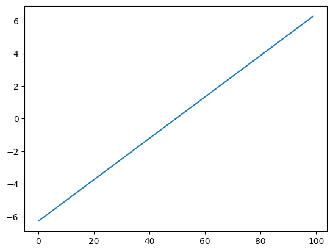
There are many ways to visualize 2D data.
He we use pcolormesh.
plt.pcolormesh(xx)
<matplotlib.collections.QuadMesh at 0x7fdcd8befc90>
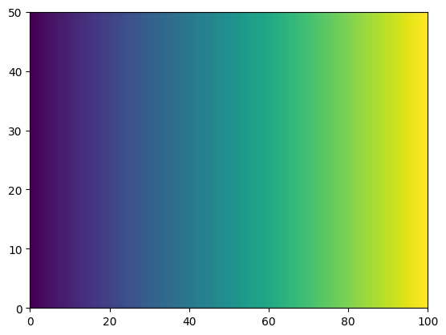
plt.pcolormesh(yy)
<matplotlib.collections.QuadMesh at 0x7fdcd8a2e290>
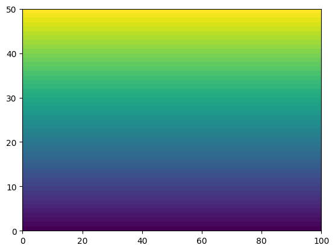
Try it
Use plt.plot to plot np.cos(x) against x. Then use plt.pcolormesh to visualize the 2D array xx + yy. (Don’t worry about labels yet — those come in the next notebook.)
Array Operations#
There are a huge number of operations available on arrays. All the familiar arithmetic operators are applied on an element-by-element basis.
Basic Math#
f = np.sin(x)
plt.plot(x, f)
[<matplotlib.lines.Line2D at 0x7fdcd8ac4090>]
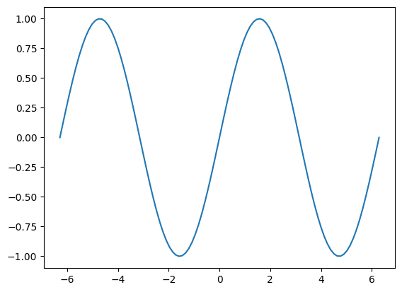
Now let’s compute a function of two variables — a 2D surface. We use the 2D xx/yy arrays (from meshgrid earlier) so the function is evaluated at every grid point.
f = np.sin(xx) * np.cos(0.5 * yy)
plt.pcolormesh(xx,yy,f)
<matplotlib.collections.QuadMesh at 0x7fdd0001e290>
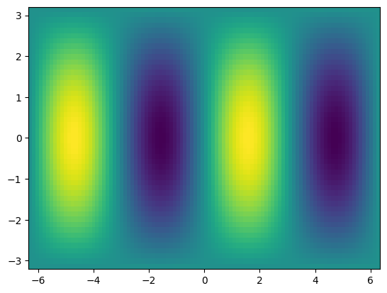
Try it
Compute a 2D Gaussian on the xx/yy grid: gaussian = np.exp(-(xx**2 + yy**2)). Visualize it with plt.pcolormesh. Where is the array largest, and where is it smallest?
Manipulating array dimensions#
Once you have an array, you often need to reshape it without changing the underlying data — to swap dimension order (transpose), reorganize the layout (reshape), repeat the array (tile), or add a new axis (with None) so it lines up with a higher-dimensional array. These all return a view or new array; they don’t usually copy the data.
Swapping the dimension order is accomplished by calling transpose.
f_transposed = f.transpose()
plt.pcolormesh(f_transposed)
<matplotlib.collections.QuadMesh at 0x7fdcd89a78d0>
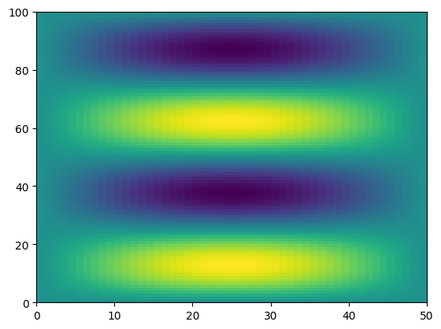
We can also manually change the shape of an array…as long as the new shape has the same number of elements.
g = np.reshape(f, (8,9))
---------------------------------------------------------------------------
ValueError Traceback (most recent call last)
Cell In[31], line 1
----> 1 g = np.reshape(f, (8,9))
File /opt/hostedtoolcache/Python/3.11.15/x64/lib/python3.11/site-packages/numpy/_core/fromnumeric.py:299, in reshape(a, shape, order, copy)
297 if copy is not None:
298 return _wrapfunc(a, 'reshape', shape, order=order, copy=copy)
--> 299 return _wrapfunc(a, 'reshape', shape, order=order)
File /opt/hostedtoolcache/Python/3.11.15/x64/lib/python3.11/site-packages/numpy/_core/fromnumeric.py:54, in _wrapfunc(obj, method, *args, **kwds)
51 return _wrapit(obj, method, *args, **kwds)
53 try:
---> 54 return bound(*args, **kwds)
55 except TypeError:
56 # A TypeError occurs if the object does have such a method in its
57 # class, but its signature is not identical to that of NumPy's. This
(...) 61 # Call _wrapit from within the except clause to ensure a potential
62 # exception has a traceback chain.
63 return _wrapit(obj, method, *args, **kwds)
ValueError: cannot reshape array of size 5000 into shape (8,9)
However, be careful with reshapeing data! You can accidentally lose the structure of the data.
g = np.reshape(f, (200,25))
plt.pcolormesh(g)
<matplotlib.collections.QuadMesh at 0x7fdcd850ba50>
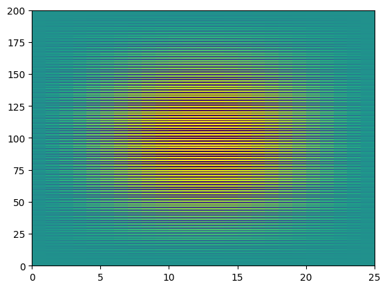
We can also “tile” an array to repeat it many times.
f_tiled = np.tile(f,(3, 2))
plt.pcolormesh(f_tiled)
<matplotlib.collections.QuadMesh at 0x7fdcd8b69010>
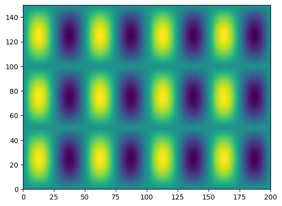
Another common need is to add an extra dimension to an array.
This can be accomplished via indexing with None.
x.shape
(100,)
x[None, :].shape
(1, 100)
x[None, :, None, None].shape
(1, 100, 1, 1)
Try it
Take the 2D array f. Transpose it and print the shape. Then reshape it to (10, 500) and print the shape. Finally, add a new leading axis so the shape becomes (1, 50, 100) — verify with .shape.
Broadcasting#
Not all the arrays we want to work with will have the same size.
One approach would be to manually “expand” our arrays to all be the same size, e.g. using tile.
Broadcasting is a more efficient way to multiply arrays of different sizes
NumPy has specific rules for how broadcasting works.
These can be confusing but are worth learning if you plan to work with NumPy data a lot.
The core concept of broadcasting is telling NumPy which dimensions are supposed to line up with each other.

General Broadcasting Rules: When performing operations on two arrays, NumPy compares their shapes element-wise starting from the trailing dimensions (right to left). It follows these rules:
If the dimensions are equal, they’re compatible.
If one of the dimensions is 1, it’s “stretched” to match the other.
If the dimensions are unequal and neither is 1, the arrays are not broadcastable.
print(f.shape, x.shape)
g = f * x
print(g.shape)
(50, 100) (100,)
(50, 100)
plt.pcolormesh(f)
<matplotlib.collections.QuadMesh at 0x7fdcd84016d0>
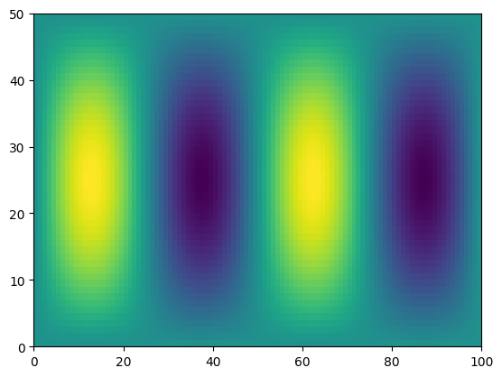
plt.pcolormesh(g)
<matplotlib.collections.QuadMesh at 0x7fdcd85dfe90>
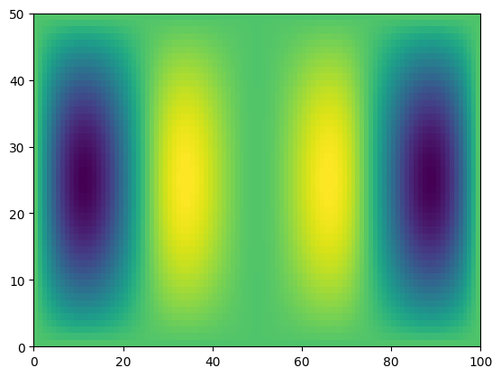
However, if the last two dimensions are not the same, NumPy cannot just automatically figure it out.
print(f.shape, y.shape)
h = f * y
(50, 100) (50,)
---------------------------------------------------------------------------
ValueError Traceback (most recent call last)
Cell In[40], line 2
1 print(f.shape, y.shape)
----> 2 h = f * y
ValueError: operands could not be broadcast together with shapes (50,100) (50,)
We can help numpy by adding an extra dimension to y at the end.
Then the length-50 dimensions will line up.
print(f.shape, y[:, None].shape)
h = f * y[:, None]
print(h.shape)
(50, 100) (50, 1)
(50, 100)
plt.pcolormesh(h)
<matplotlib.collections.QuadMesh at 0x7fdcd849fcd0>
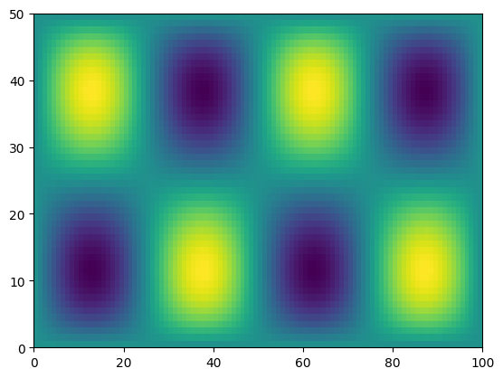
Try it
Create and plot f = np.sin(xx) * np.cos(0.5*yy) from before — but use the 1D x and y arrays plus broadcasting (add a None axis on each in the right place). Verify your result looks the same as the 2D version above.
Reduction Operations#
In scientific data analysis, we usually start with a lot of data and want to reduce it down in order to make plots of summary tables. Operations that reduce the size of numpy arrays are called “reductions”. There are many different reduction operations. Here we will look at some of the most common ones.
The usual statistical reductions — sum, mean, standard deviation — work as you’d expect when applied to the whole array:
g.sum()
np.float64(-3083.038387807155)
g.mean()
np.float64(-0.616607677561431)
g.std()
np.float64(1.6402280119141424)
A key property of numpy reductions is the ability to operate on just one axis.
plt.pcolormesh(g)
plt.colorbar()
<matplotlib.colorbar.Colorbar at 0x7fdcd8356950>
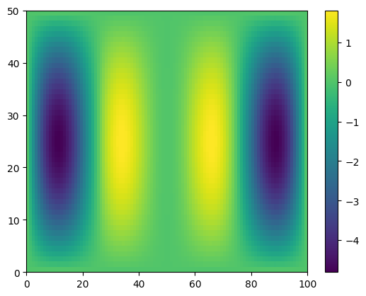
We can reduce along specific axes. axis=0 reduces along the first dimension (rows of g), leaving the column means. axis=1 reduces along the second dimension, leaving the row means.
g_ymean = g.mean(axis=0)
g_xmean = g.mean(axis=1)
plt.plot(x, g_ymean)
[<matplotlib.lines.Line2D at 0x7fdcd8539250>]
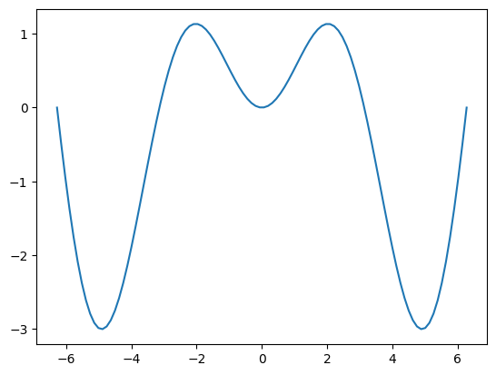
plt.plot(g_xmean, y)
[<matplotlib.lines.Line2D at 0x7fdcd83e0dd0>]
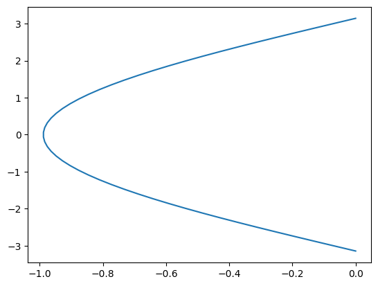
Reductions can also operate on multiple axes at once — useful for higher-dimensional data.
arr3d = np.ones((100, 50, 25))
arr3d.mean(axis=(0, 1, 2)) # reduce across all three axes
np.float64(1.0)
Try it
Take g. Compute its overall sum, mean, and standard deviation. Then take the mean along axis 0 (the column means) and plot it against x. Take the standard deviation along axis 1 (the row stds) and plot it against y.
Data Files#
It’s often useful to save a numpy array to disk so you can reload it later or share it with someone else. NumPy provides a simple .npy binary format for this, plus loaders for plain text and other common formats.
np.save('g.npy', g)
Warning
NumPy .npy files are convenient for temporary data, but are not a robust archival format. Later we’ll meet NetCDF, the recommended format for earth and environmental data.
g_loaded = np.load('g.npy')
g_loaded
array([[-9.42326863e-32, -4.77205105e-17, -9.27211559e-17, ...,
-9.27211559e-17, -4.77205105e-17, -9.42326863e-32],
[-9.86000036e-17, -4.99321700e-02, -9.70184196e-02, ...,
-9.70184196e-02, -4.99321700e-02, -9.86000036e-17],
[-1.96794839e-16, -9.96591580e-02, -1.93638170e-01, ...,
-1.93638170e-01, -9.96591580e-02, -1.96794839e-16],
...,
[-1.96794839e-16, -9.96591580e-02, -1.93638170e-01, ...,
-1.93638170e-01, -9.96591580e-02, -1.96794839e-16],
[-9.86000036e-17, -4.99321700e-02, -9.70184196e-02, ...,
-9.70184196e-02, -4.99321700e-02, -9.86000036e-17],
[-9.42326863e-32, -4.77205105e-17, -9.27211559e-17, ...,
-9.27211559e-17, -4.77205105e-17, -9.42326863e-32]],
shape=(50, 100))
To confirm that assert_equal really checks element-wise equality, here’s a deliberate failure — we scale g_loaded by 0.5 first, so the arrays no longer match:
np.testing.assert_equal(g, g_loaded*0.5)
---------------------------------------------------------------------------
AssertionError Traceback (most recent call last)
Cell In[54], line 1
----> 1 np.testing.assert_equal(g, g_loaded*0.5)
[... skipping hidden 2 frame]
File /opt/hostedtoolcache/Python/3.11.15/x64/lib/python3.11/site-packages/numpy/testing/_private/utils.py:983, in assert_array_compare(comparison, x, y, err_msg, verbose, header, precision, equal_nan, equal_inf, strict, names)
978 err_msg += '\n' + '\n'.join(remarks)
979 msg = build_err_msg([ox, oy], err_msg,
980 verbose=verbose, header=header,
981 names=names,
982 precision=precision)
--> 983 raise AssertionError(msg)
984 except ValueError:
985 import traceback
AssertionError:
Arrays are not equal
Mismatched elements: 5000 / 5000 (100%)
First 5 mismatches are at indices:
[0, 0]: -9.423268630719833e-32 (ACTUAL), -4.7116343153599164e-32 (DESIRED)
[0, 1]: -4.772051054476247e-17 (ACTUAL), -2.3860255272381235e-17 (DESIRED)
[0, 2]: -9.272115587698693e-17 (ACTUAL), -4.6360577938493465e-17 (DESIRED)
[0, 3]: -1.343250993407507e-16 (ACTUAL), -6.716254967037535e-17 (DESIRED)
[0, 4]: -1.7194080716846254e-16 (ACTUAL), -8.597040358423127e-17 (DESIRED)
Max absolute difference among violations: 2.40510295
Max relative difference among violations: 1.
ACTUAL: array([[-9.423269e-32, -4.772051e-17, -9.272116e-17, ..., -9.272116e-17,
-4.772051e-17, -9.423269e-32],
[-9.860000e-17, -4.993217e-02, -9.701842e-02, ..., -9.701842e-02,...
DESIRED: array([[-4.711634e-32, -2.386026e-17, -4.636058e-17, ..., -4.636058e-17,
-2.386026e-17, -4.711634e-32],
[-4.930000e-17, -2.496608e-02, -4.850921e-02, ..., -4.850921e-02,...
np.testing.assert_equal(g, g_loaded)
No output means the assertion passed — the loaded array is element-wise equal to the original.
Try it
Save the 3D array arr3d to a file called arr3d.npy. Load it back into a new variable and verify they’re equal using np.testing.assert_equal.
Recap#
You’ve now met NumPy, the foundation of numerical Python:
Arrays (
ndarray) — creating them (np.array,zeros,ones,arange,linspace) and inspectingshapeanddtype.Indexing and slicing — pulling out elements, rows, columns, and sub-arrays.
Vectorized operations — math across whole arrays at once, including broadcasting between different shapes.
Reductions — collapsing arrays with
sum,mean,max, … along chosen axes.Plotting and files — a first look at Matplotlib, and saving/loading arrays with
np.save/np.load.
Next we go deeper into visualization — the Figure/Axes model and the full range of plot types — in More Matplotlib.